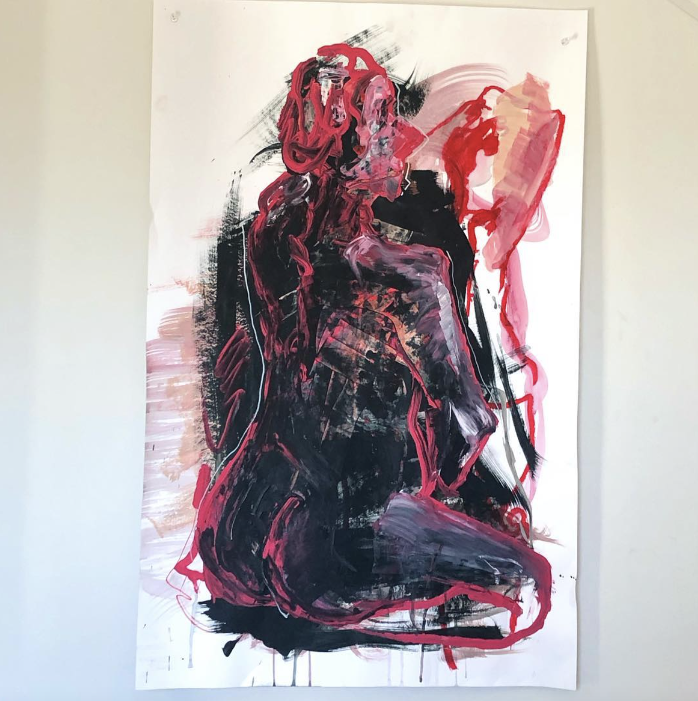

Ruth Johnson is a multimedia artist and student studying journalism at Columbia College Chicago. Johnson mainly works with film and old digital photography, and also has her own jewelry brand, st4rhore, that she started in early 2021.

Johnson is originally from Portland, Oregon. Growing up very art-focused, Johnson has a background in the fine arts, most specifically figure painting. Constantly exploring new mediums, keep up to date with newer works by visiting her art instagram, linked below!